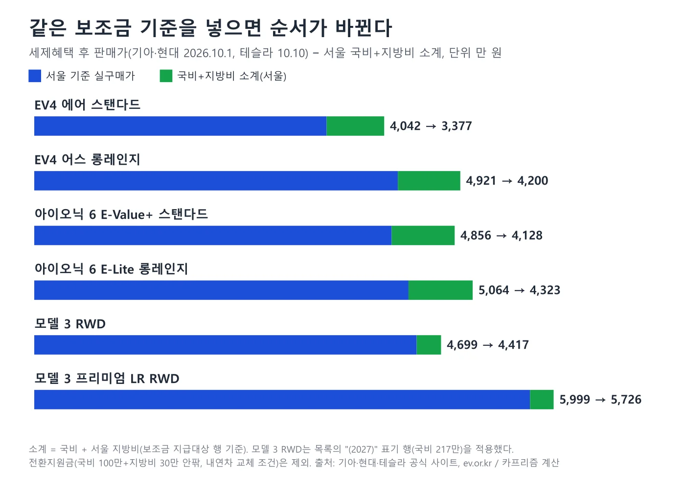
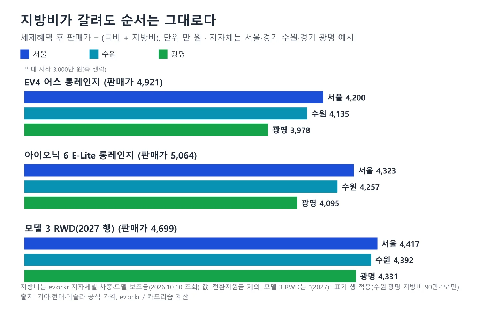
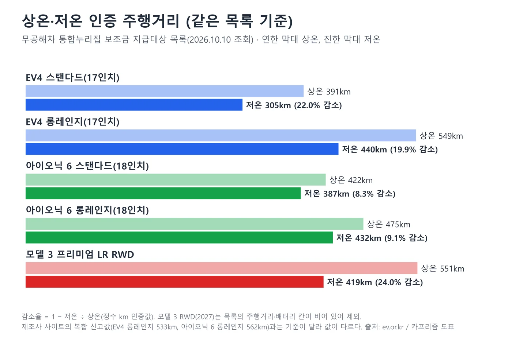
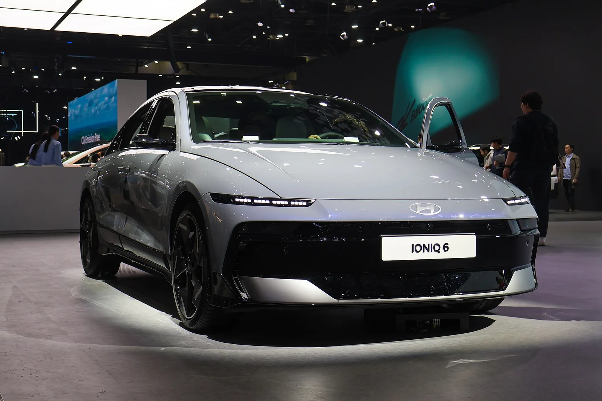
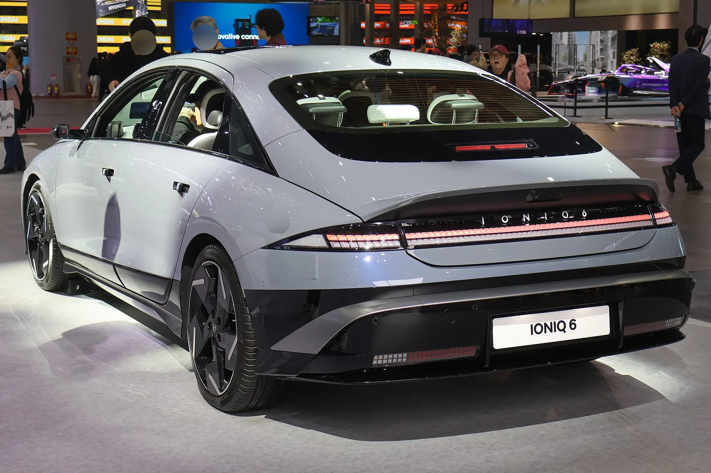
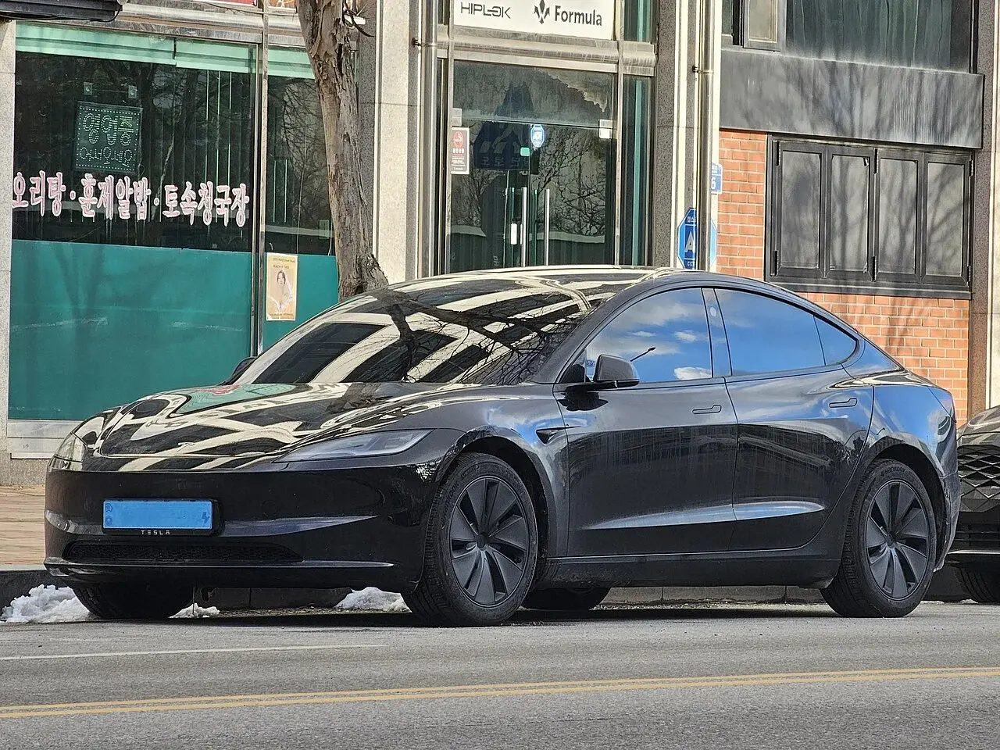

▲ 기아 EV4. 국내에는 세단형만 출시된다. 이 글에서 4,921만 원에 놓인 트림은 어스 롱레인지이며 사진 속 트림은 확정하지 않는다 ⓒ Oleg Yunakov, Wikimedia Commons (CC BY-SA 4.0)
"모델 3가 제일 싸다." 공식 가격표만 보면 맞다. 테슬라 모델 3 RWD가 4,699만 원, 기아 EV4 어스 롱레인지가 4,921만 원(세제혜택 후), 현대 아이오닉 6 E-Lite 롱레인지가 5,064만 원이다. 그런데 서울 거주자가 국비와 지방비를 같은 기준으로 빼 보면 EV4 4,200만 원, 아이오닉 6 4,323만 원, 모델 3 4,417만 원으로 순서가 뒤집힌다. 이 글은 보조금 100% 구간(세제혜택 후 5,300만 원 미만) 안에서 5천만 원 안팎인 세 트림을 고르고, 가격표(기아·현대 2026년 10월 1일, 테슬라 10월 10일 조회)와 무공해차 통합누리집의 보조금·인증 주행거리를 한 장에 놓았다. 모델 3 RWD는 통합누리집 목록의 "(2027)" 표기 행을 적용했고, 그 행은 주행거리·배터리 칸이 비어 있어 4,699만 원 트림과 같은 차인지는 행 이름으로 매칭한 추정이다(2장). 다만 이전 사양 행(국비 168만 원)을 적용해도 서울 실구매가는 4,481만 원으로 세 트림 중 가장 높아, 순서 자체는 이 추정에 좌우되지 않는다.
EV4의 가격·제원·해외 평가는 EV4 가격·제원 기사, 겨울철 감소율 순위는 저온 감소율 기사, 모델 3 퍼포먼스 인증은 모델 3 퍼포먼스 인증 기사에서 다뤘다. 이 글은 세 모델을 같은 표에 놓고 같은 기준으로 빼는 데 집중한다.
1. 비교의 규칙 — 같은 세금, 같은 보조금 기준, 같은 시점
가격표는 세 가지를 맞춰야 서로 뺄 수 있다. 첫째 세금이다. 기아와 현대 가격표는 "세제혜택 전·후"를 나눠 싣는다. 이 글은 모두 세제혜택 후 값만 쓴다. 현대차 가격표에는 "개별소비세 및 교육세 감면 기준(390만 원 한도)"이라는 문구가 있다. 기아 EV4 가격표에도 같은 문구가 있고, 전·후 차이(에어 스탠다드 210만 원, 어스 롱레인지 256만 원, 아이오닉 6 E-Lite 롱레인지 263만 원)가 모두 390만 원 이하여서 한도에 걸리지 않는 구간이다. 개별소비세 5%가 2026년 7월 1일 되돌아왔다는 점은 정부 일정에 따른 것이고, 두 회사 10월 1일 페이지에는 세율 문구가 없어 가격표 구간은 추정이다.
둘째 보조금이다. 무공해차 통합누리집 '보조금 지급대상 차종'과 '지자체별 차종·모델 보조금'(2026년 10월 10일 조회)의 국비·지방비를 같은 행 이름으로 가져왔다. 2026년 업무처리지침은 지방비를 국비의 30% 이상으로 편성하라고 규정하고, 기본가격 5,300만 원 미만은 보조금 100%, 5,300만~8,500만 원 미만은 50%, 8,500만 원 이상은 0%라는 가격계수를 둔다. 셋째 시점이다. 기아·현대는 10월 1일 가격표, 테슬라는 10월 10일 공식 사이트 조회로, 9일 차이가 난다.
| 모델·트림 | 판매가(세제혜택 후) | 배터리 | 가격 출처 |
|---|---|---|---|
| 기아 EV4 어스 롱레인지 (17인치) | 4,921 (세제혜택 전 5,177) | 81.4kWh | 기아 공식 가격표 2026.10.1 |
| 현대 아이오닉 6 E-Lite 롱레인지 (18인치) | 5,064 (세제혜택 전 5,327) | 84kWh | 현대차 공식 가격표 2026.10.1 |
| 테슬라 모델 3 RWD (18인치) | 4,699 | 확인하지 못함 | 테슬라 코리아 공식 사이트 2026.10.10 (부가세 포함, 추가 제반비용·세금 제외) |
이 세 트림을 고른 이유는 가격이 4,699만~5,064만 원 안에 모이기 때문이다. 같은 배터리급으로 맞춘 줄(EV4 에어 롱레인지, 아이오닉 6 E-Lite 롱레인지, 모델 3 프리미엄 롱레인지 RWD)과 입문 배터리 줄(EV4 에어 스탠다드, 아이오닉 6 E-Value+ 스탠다드)은 5장과 6장에서 따로 본다. 가격표 값이 같은 세금 기준이라는 확인은 기아·현대만 됐다. 테슬라 페이지는 "부가세 포함, 추가 제반비용 및 세금 제외"로만 적혀 있어 개별소비세 감면이 이미 들어간 값인지 확인하지 못했다.
📍 EV4 · 아이오닉 6 전체 가격표 (세제혜택 후, 만 원)
EV4는 에어 스탠다드 4,042, 에어 롱레인지 4,462, 어스 스탠다드 4,501, 어스 롱레인지 4,921, GT-Line 스탠다드 4,611, GT-Line 롱레인지 5,031이다. 아이오닉 6은 E-Value+ 스탠다드 4,856, E-Lite 롱레인지 5,064, 익스클루시브 스탠다드 5,095, 익스클루시브 롱레인지 5,515, 프리스티지 스탠다드 5,553이다. 테슬라는 모델 3 4,699, 프리미엄 5,999, 퍼포먼스 6,999다. 옵션과 취득세·부대비용은 모두 뺀 값이다.
▲ 기아 EV4. 국내에는 세단형만 출시된다. 사진 속 차의 트림은 확정하지 않으며 이 글에서 4,921만 원에 놓인 트림은 어스 롱레인지다 ⓒ Oleg Yunakov, Wikimedia Commons (CC BY-SA 4.0)
2. 판매가 — 모델 3가 가장 싸 보이는 이유와 허점
세 트림의 가격표 순서는 모델 3(4,699만), EV4(4,921만), 아이오닉 6(5,064만)이다. 모델 3 RWD와 EV4의 차이는 222만 원, EV4와 아이오닉 6의 차이는 143만 원이다. 하지만 이 가격은 입문 트림끼리가 아니다. 모델 3 RWD는 테슬라 라인업의 가장 싼 트림이고, EV4 어스 롱레인지는 EV4 중간 이상 트림이다. EV4 가장 싼 트림(에어 스탠다드 4,042만 원)을 놓으면 모델 3보다 657만 원 낮다. 그래서 이 글은 "같은 값"을 가격이 겹치는 구간으로 정의했고, 배터리·주행거리가 같다는 뜻이 아니다.
모델 3 RWD의 공식 인증 주행거리와 배터리 용량은 확인하지 못했다. 테슬라 모델 3 페이지는 RWD를 "430km(MCT 기준)", 중량 1,760kg, 휠 18인치로 적는데, MCT 기준이 한국 환경부 인증 값과 같은지 페이지에 설명이 없다. 통합누리집 목록에도 "Model 3 RWD (2027)" 행은 있지만 주행거리와 배터리 칸이 비어 있고, 같은 목록의 "Model 3 RWD" 행(상온 399km·저온 309km, 리튬인산철 62.1kWh, 국비 168만 원)은 이전 사양으로 보인다. 4,699만 원 트림이 어느 행에 해당하는지는 이름 표기만으로 추정했다. 다만 두 행 모두 서울 지방비까지 반영하면 EV4와 아이오닉 6보다 비싸다. "(2027)" 행이면 4,699−217−65=4,417만 원, 이전 사양 행(국비 168만+서울 50만 원)이면 4,699−168−50=4,481만 원이다. 통합누리집에는 같은 이름의 "Model 3 Premium Long Range RWD(5999만원)"처럼 가격이 이름에 적힌 행도 있어, 가격 표기가 확실한 비교는 6장의 프리미엄 롱레인지 줄을 기준으로 보는 편이 안전하다. RWD 행에는 4,699만 원 같은 가격 표기가 없어 일치 여부는 확인하지 못했다.
| 배터리급 | 기아 EV4 | 현대 아이오닉 6 | 테슬라 모델 3 |
|---|---|---|---|
| 입문(약 58~63kWh) | 에어 스탠다드 4,042 (58.3kWh) | E-Value+ 스탠다드 4,856 (63kWh) | RWD 4,699 (배터리 확인 못함) |
| 5천만 원 안팎 | 어스 롱레인지 4,921 (81.4kWh) | E-Lite 롱레인지 5,064 (84kWh) | RWD 4,699 |
| 롱레인지(80kWh대) | 에어 롱레인지 4,462 (81.4kWh) | E-Lite 롱레인지 5,064 (84kWh) | 프리미엄 롱레인지 RWD 5,999 (84.7kWh) |
| 최고 트림(참고) | GT-Line 롱레인지 5,031 | 프리스티지 N Line 롱레인지(세제혜택 후 6,132) | 퍼포먼스 6,999 |
3. 보조금 — 같은 기준으로 빼면 순서가 뒤집힌다
국비는 무공해차 통합누리집 '보조금 지급대상 차종' 목록, 지방비는 같은 사이트 '지자체별 차종·모델 보조금'에서 서울·경기 수원·경기 광명을 조회한 값이다. 국비는 전국이 같고, 지방비는 지자체가 정한다. 서울의 지방비는 국비의 약 30%(EV4 어스 롱레인지 555만 원에 166만 원)다.
| 트림 | 판매가 | 국비 | 서울 지방비 | 소계 | 실구매가(서울) | 국비만 뺀 값 |
|---|---|---|---|---|---|---|
| EV4 어스 롱레인지 | 4,921 | 555 | 166 | 721 | 4,200 | 4,366 |
| 아이오닉 6 E-Lite 롱레인지 | 5,064 | 570 | 171 | 741 | 4,323 | 4,494 |
| 모델 3 RWD(2027 행) | 4,699 | 217 | 65 | 282 | 4,417 | 4,482 |
계산식은 실구매가=판매가−국비−지방비다. EV4 4,921−555−166=4,200, 아이오닉 6 5,064−570−171=4,323, 모델 3 4,699−217−65=4,417이다. 모델 3는 판매가가 EV4보다 222만 원 낮지만 보조금 소계가 439만 원 적어(721−282) 실구매가는 217만 원(=439−222) 높다. 국비만 빼면 EV4 4,366만, 모델 3 4,482만, 아이오닉 6 4,494만 원으로 모델 3와 아이오닉 6의 차이가 12만 원에 그치지만, 서울 지방비까지 빼면 아이오닉 6이 4,323만 원으로 모델 3(4,417만 원)보다 94만 원 낮아진다. 지방비도 국비에 비례해 책정되기 때문이다. 즉 "모델 3가 가장 비싸다"는 서울의 국비+지방비를 모두 뺀 기준이며, 국비만 빼면 가장 비싼 쪽은 아이오닉 6(4,494만 원)이다.

▲ 판매가(전체 막대)와 서울 국비+지방비 소계(녹색), 실구매가(파랑). 카프리즘 제작 도표, 출처 기아·현대·테슬라 공식 사이트, 무공해차 통합누리집
📍 모델 3의 국비가 작은 이유는 목록에 없다
2026년 지침은 국비를 "자동차 성능(연비·주행거리), 저공해차 보급목표 달성실적, 가격인하 여부 등"을 고려해 산정한다고 적는다. 통합누리집 목록은 행마다 최종 금액만 보여 줘서 모델 3 RWD(2027)가 217만 원인 이유는 확인하지 못했다. 모델 3 프리미엄 롱레인지 RWD(5,999만 원 표기) 210만 원은 같은 이름 행의 국비 420만 원을 가격계수 50%로 줄인 값과 숫자가 같다.
4. 지방비가 달라지면 — 서울·수원·광명 예시
지방비는 지자체마다 다르다. 같은 EV4 어스 롱레인지의 지방비는 서울 166만 원, 경기 수원 231만 원, 경기 광명 388만 원이었다. 아이오닉 6 E-Lite 롱레인지는 171만·237만·399만 원, 모델 3 RWD(2027 행)는 65만·90만·151만 원이다. 국비 대비 지방비 비율은 서울 약 30%, 수원 약 42%, 광명 약 70%로 읽힌다.
| 트림 | 서울 | 경기 수원 | 경기 광명 |
|---|---|---|---|
| EV4 어스 롱레인지 | 4,200 | 4,135 | 3,978 |
| 아이오닉 6 E-Lite 롱레인지 | 4,323 | 4,257 | 4,095 |
| 모델 3 RWD(2027 행) | 4,417 | 4,392 | 4,331 |
광명처럼 지방비가 큰 곳에서는 EV4 3,978만, 아이오닉 6 4,095만, 모델 3 4,331만 원으로 간격이 아이오닉 6과 EV4 117만 원, 모델 3와 EV4 353만 원이다. 서울에서는 123만 원과 217만 원이었다. 지방비가 커질수록 국비가 큰 차의 지방비도 같이 커져서 EV4와 모델 3의 간격은 217만 원에서 353만 원으로 벌어지고, EV4와 아이오닉 6의 간격은 123만 원에서 117만 원으로 거의 그대로다. 세 지역 모두 순서는 EV4, 아이오닉 6, 모델 3로 같았다. 지방비는 소진 시점과 신청 순서에 따라 바뀌므로 구매 직전 거주지 공고로 확인해야 한다. 지자체별 차종·모델 보조금 바로가기

▲ 서울·경기 수원·경기 광명의 실구매가. 지방비가 커져도 EV4, 아이오닉 6, 모델 3의 순서는 바뀌지 않았다. 카프리즘 제작 도표
체크포인트: 신청 전에 확인할 것 (2026년 업무처리지침 기준)
- 순서: 구매계약 → 구매 지원신청서 접수 → 지자체의 대상자 선정·통보 → 차량 출고·등록(2개월 이내 원칙) → 제작사의 보조금 신청(출고·등록 후 10일 이내) → 지급(14일 이내 원칙)
- 납부: 구매자는 차량 대금과 보조금의 차액만 제작사에 낸다
- 전환지원금: 최초 등록 후 3년 이상 지난 내연기관차(하이브리드 제외)를 판매·폐차한 개인이 보유 3년 이상 조건을 채우면 국비 100만 원 이내를 더 받는다. 목록의 EV4·아이오닉 6 롱레인지는 국비 100만+지방비 30만 원(서울)이고 소계에는 들어 있지 않다. 가족 간 증여·판매는 제외된다
- 재지원 제한: 같은 차종을 2년 안에 2대 이상 사는 개인은 첫 1대만 지원된다
지급대상 목록은 통합누리집 보조금 지급대상 바로가기에서 볼 수 있다.
5. 인증 주행거리 — 상온 549km와 저온 440km 사이
세 모델을 통합누리집 목록의 상온·저온 값으로 맞췄다. EV4 롱레인지(17인치)는 549/440km, 아이오닉 6 롱레인지(18인치)는 475/432km, 모델 3 프리미엄 롱레인지 RWD는 551/419km다. 저온 감소율(=1−저온÷상온)은 EV4 19.9%, 아이오닉 6 9.1%, 모델 3 프리미엄 24.0%다. 2026년 지침의 보조금 가중주행거리(=상온×0.75+저온×0.25)로 바꾸면 EV4 521.75km, 아이오닉 6 464.25km, 모델 3 프리미엄 518.0km다. 이 값은 영하 7℃ 실험실 인증값이어서 실제 겨울 도로의 감소율이 아니다.
| 트림 | 상온/저온 | 저온 감소율 | 가중주행거리 | 제조사 사이트 복합 신고값 |
|---|---|---|---|---|
| EV4 스탠다드 17인치 | 391/305 | 22.0% | 369.50 | 382 |
| EV4 롱레인지 17인치 | 549/440 | 19.9% | 521.75 | 533 |
| 아이오닉 6 스탠다드 18인치 | 422/387 | 8.3% | 413.25 | 437 |
| 아이오닉 6 롱레인지 18인치 | 475/432 | 9.1% | 464.25 | 562 |
| 모델 3 프리미엄 롱레인지 RWD | 551/419 | 24.0% | 518.00 | 페이지에 신고값 없음(RWD 430km는 MCT 기준) |

▲ 통합누리집 목록의 상온·저온 인증 주행거리. 카프리즘 제작 도표
📍 제조사 사이트 숫자와 목록 숫자는 왜 다른가
기아 EV4 제원 페이지는 롱레인지 17인치 복합 533km, 현대 아이오닉 6 소개 페이지는 롱레인지 18인치 복합 562km를 싣는다. 통합누리집 목록은 같은 행을 549km와 475km로 적는다. 아이오닉 6은 87km나 차이 나는데, 이유는 확인하지 못했다. 그래서 세 모델은 모두 같은 목록의 값으로 비교하고 제조사 값은 참고로만 표에 넣었다. 겨울철 비교는 저온 감소율 기사에 107행 전체 순위가 있다.
6. 같은 배터리급으로 맞추면 — 80kWh대 비교
배터리 용량으로 맞추면 그림이 다르다. EV4 에어 롱레인지(81.4kWh) 4,462만 원은 서울 실구매가 3,741만 원(=4,462−555−166), 아이오닉 6 E-Lite 롱레인지(84kWh) 5,064만 원은 4,323만 원, 모델 3 프리미엄 롱레인지 RWD(84.7kWh) 5,999만 원은 5,726만 원(=5,999−210−63)이다. 모델 3 프리미엄은 5,300만 원 선을 넘어 목록 국비가 210만 원이고, 판매가에서 보조금이 차지하는 비율이 4.6%(=273÷5,999)에 불과하다. EV4 에어 롱레인지는 16.2%(=721÷4,462), 아이오닉 6은 14.6%(=741÷5,064)다.
서울 실구매가를 인증 저온 주행거리로 나눈 km당 값은 EV4 에어 롱레인지 약 85,023원(37,410,000÷440), 아이오닉 6 E-Lite 롱레인지 약 100,069원(43,230,000÷432), 모델 3 프리미엄 롱레인지 약 136,659원(57,260,000÷419)이다. EV4 어스 롱레인지로 계산하면 95,455원(42,000,000÷440)이다. 이 값은 가격이 같은 가치를 뜻하지 않는다. 전장·실내·옵션은 반영하지 않았다.

▲ 현대 아이오닉 6(2025 서울모빌리티쇼 전시차). 목록의 "더 뉴 아이오닉6" 행과 사양이 같은지는 확인하지 않았다 ⓒ Treeinkr, Wikimedia Commons (CC BY-SA 4.0)
7. 크기·충전·보증 — 공식 값으로 맞춘 표
세 차의 크기는 공식 제원을 가져왔다. 아이오닉 6이 전장 4,925mm로 가장 길고, 모델 3(4,720mm)와 EV4(4,730mm)는 10mm 차이다. 휠베이스는 EV4 2,820mm, 아이오닉 6 2,950mm이고 테슬라 페이지에는 휠베이스가 없다. 충전은 아이오닉 6이 350kW급 충전기로 10→80% 18분(현대차 소개 페이지), EV4는 롱레인지 약 31분·스탠다드 약 29분(기아 보도자료 2025.3.10, 350kW급, 연구소 자체 측정 기준)이다. 모델 3는 슈퍼차저 최대 175kW까지만 확인했고 10→80% 시간은 확인하지 못했다.
| 항목 | EV4 | 아이오닉 6 | 모델 3 |
|---|---|---|---|
| 전장×전폭×전고(mm) | 4,730×1,860×1,480 | 4,925×1,880×1,495 | 4,720×1,933(접힌 미러 포함)×1,440 |
| 휠베이스(mm) | 2,820 | 2,950 | 페이지에 없음 |
| 급속충전 | 10→80% 롱레인지 약 31분·스탠다드 약 29분(350kW급) | 10→80% 18분(350kW급) | 슈퍼차저 최대 175kW(RWD) |
| 동절기 충전 유의 | 기아 페이지: 외기온 하락 시 실충전시간 증가 가능 | −7℃에서 초급속충전 1시간 10분 이상 소요될 수 있고, 히팅 시스템이 약 25분 단축 | 확인하지 못함 |
| 배터리 보증 | 고전압 배터리 10년/20만km(개인 최초 고객 기준, 기아 페이지) | 확인하지 못함 | 8년/16만km(모델 3 RWD), 프리미엄 롱레인지는 확인하지 못함 |
| 차량 기본 보증 | 확인하지 못함 | 확인하지 못함 | 4년/8만km(테슬라) |
보증은 조건이 붙는다. 기아는 고전압 배터리 보증을 개인 최초 고객 기준으로 표기하고, 테슬라는 배터리 용량이 70% 이상 유지돼야 한다는 조건을 붙인다. 계약 전 보증서로 km와 조건을 직접 확인해야 한다. EV4 가격표 바로가기 아이오닉 6 가격표 바로가기 모델 3 가격 바로가기

▲ 테슬라 모델 3 하이랜드(전시차). 사진 속 차의 트림은 확정하지 않는다. 모델 3 세부 평가는 모델 3 하이랜드 리뷰 기사에서 볼 수 있다 ⓒ Chanokchon, Wikimedia Commons (CC BY-SA 4.0)
8. 올해 사야 하나 — 2027년 기준선 계획과의 거리
2026년 지침은 2027년에 보조금 전액 지원 기준을 최대 5천만 원 미만으로, 50% 지원 기준을 5천만~8천만 원 미만으로 강화할 계획이라고 적었다. 계획이어서 확정은 아니다. 2026년 기준을 그대로 두고 보면 세 트림은 모두 5,300만 원 미만이다. 5천만 원 선으로 올려 보면 아이오닉 6 E-Lite 롱레인지(5,064만 원)만 선 위에 걸린다. 모델 3 RWD(4,699만)와 EV4 어스 롱레인지(4,921만)는 선 아래다. 이 선의 판정 기준이 세제혜택 후 판매가인지, 옵션 포함인지는 지침 본문에서 확인하지 못했다. 같은 이슈를 다룬 2027년 보조금 기준선 기사도 참고하면 된다.

▲ 현대 아이오닉 6 후면(2025 서울모빌리티쇼 전시차). 한국 판매 사양과 같은지는 확인하지 않았다 ⓒ Treeinkr, Wikimedia Commons (CC BY-SA 4.0)
9. 누가 무엇을 고르나 — 숫자가 말하는 것과 말하지 않는 것
서울에서 5천만 원 안팎을 쓴다면 숫자로는 EV4 어스 롱레인지가 가장 낮고(4,200만 원), 상온 549km·저온 440km로 같은 목록에서 아이오닉 6 롱레인지(475/432km)보다 길다. 저온 감소율은 아이오닉 6이 9.1%로 가장 작고 모델 3 프리미엄이 24.0%로 가장 크다. 충전은 아이오닉 6 18분이 가장 짧게 적혀 있고 EV4는 약 31분이다. 모델 3는 판매가가 가장 낮지만 보조금이 가장 작아 서울 실구매가가 가장 높다. 승차감·실내·소프트웨어·서비스망은 이 글의 표에 없다. 시승기는 모델 3 하이랜드와 EV4 기사에 있다.
모델 3 입문(RWD) 구매자에게는 이 글의 확인 못 한 부분이 크다. 인증 주행거리·배터리 용량이 공개 목록에서 비어 있어, 같은 값 비교의 핵심인 "얼마나 가나"를 채우지 못했다. 모델 3 하이랜드의 V2L 소식은 모델 3·Y V2L 기사에서 다뤘다.

▲ 모델 3 하이랜드 측면. 사진 속 차의 연식과 구동 방식은 확정하지 않는다 ⓒ Damian B Oh, Wikimedia Commons (CC BY-SA 4.0)
10. 이 글이 확인하지 못한 것
- 모델 3 RWD: 통합누리집 "(2027)" 행이 테슬라 4,699만 원 트림과 같은지, 그 행의 인증 주행거리·배터리 용량(목록 칸이 비어 있음)
- 테슬라 가격표의 세금 기준: 개별소비세 감면이 가격에 이미 반영됐는지(페이지는 "세금 제외"로만 표기)
- 제조사 신고값과 목록 값의 차이 이유: 아이오닉 6 롱레인지 562km(제조사)와 475km(목록) 등
- 아이오닉 6 배터리 보증, 모델 3 프리미엄 제원·보증, 두 차의 EV4 같은 기준 보증 조건
- 국비 산정 사유: 모델별 금액이 다른 항목별 근거는 목록에 없음
- 지방비 전국 비교: 서울·수원·광명 세 곳만 조회했다. 소진 시점·신청 순서에 따라 달라진다
11. 요약
가격이 겹치는 5천만 원 안팎 세 트림을 같은 세금·보조금 기준으로 맞추면, 판매가는 모델 3 RWD 4,699만 원이 가장 싸지만 서울 실구매가는 EV4 어스 롱레인지 4,200만 원, 아이오닉 6 E-Lite 롱레인지 4,323만 원, 모델 3 4,417만 원 순으로 올라간다. 모델 3 국비가 217만 원이어서다.
같은 80kWh대 롱레인지로 맞추면 서울 실구매가는 EV4 에어 3,741만, 아이오닉 6 4,323만, 모델 3 프리미엄 5,726만 원이다. 인증 주행거리(목록 상온/저온)는 EV4 549/440km, 아이오닉 6 475/432km, 모델 3 프리미엄 551/419km다.
모델 3 RWD의 인증 주행거리·배터리와 테슬라 가격의 세금 반영 여부, 아이오닉 6 배터리 보증은 확인하지 못했다. 지방비는 서울·수원·광명 예시이며 신청 직전 거주지 공고로 확인해야 한다.